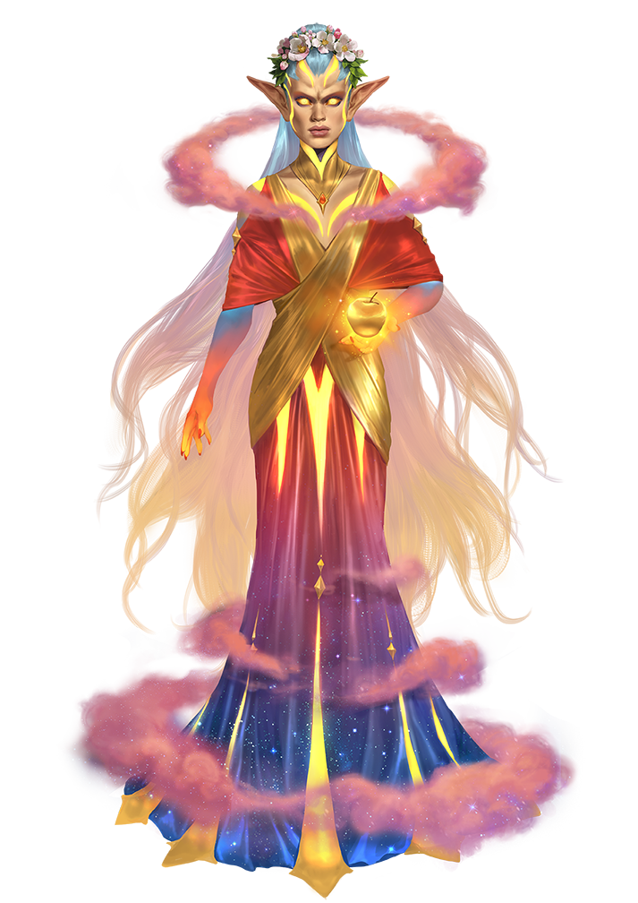

Archives of Nethys

Elite | Normal | Weak
Proficiency without Level
Print Stat Block
Hesperid QueenCreature 19

Uncommon Medium Fey Leshy NymphSource Monster Core 2 pg. 239
Recall Knowledge DC 41 (includes +2 from Uncommon) • Fey (Nature)
Perception +34; low-light vision
Languages Common, Draconic, Empyrean, Fey, Utopian
Skills Acrobatics +32, Arcana +30, Athletics +28, Deception +37, Diplomacy +39, Intimidation +37, Nature +32, Performance +35, Society +30, Stealth +32
Str +5, Dex +9, Con +6, Int +7, Wis +7, Cha +10
Tied to the Land A hesperid queen is intrinsically tied to a isolated region such as an island or island chain, remote coast, or secluded valley. As long as the queen is healthy, the environment is exceptionally resilient, allowing the hesperid queen to automatically attempt to counteract spells and rituals that would harm the environment, such as blight, with a +37 counteract modifier and a counteract rank of 10. When the hesperid queen becomes physically or psychologically unhealthy, however, their warded region eventually becomes twisted or unhealthy as well. In that case, restoring the hesperid queen swiftly heals the entire region.
AC 44; Fort +31, Ref +36, Will +34
HP 305; Weaknesses cold iron 15
Nymph's Beauty (aura, emotion, incapacitation, mental, primal, visual) 30 feet. Creatures that start their turn in the aura must succeed at a DC 38 Will save or be become transfixed in awe, causing them to be stunned for 1 round.
Speed 30 feet, fly 90 feet
Melee [one-action] sunset ribbon +36 [+32/+28] (agile, finesse), Damage 4d10+13 slashing plus 1d6 fire and 1d6 vitalityRanged [one-action] sunset ray +36 [+31/+26] (magical, range increment 120 feet), Damage 4d12+13 fire plus 1d6 vitalityPrimal Prepared Spells DC 44; 10th manifestation; 9th falling stars, sunburst, wrathful storm; 8th migration, mountain resilience, punishing winds; 7th energy aegis, regenerate, volcanic eruption; 6th dispel magic, slow, truesight; 5th breath of life, control water, mirage; 4th resist energy, unfettered movement, vital beacon; 3rd earthbind, haste, one with stone; 2nd animal messenger, revealing light, water breathing; 1st gentle landing, gust of wind, vanishing tracks; Cantrips (10th) detect magic, electric arc, guidance, prestidigitation, read aura
Primal Innate Spells DC 44, attack +36; 10th heal, holy light, illusory disguise (×3), revealing light; Cantrips (10th) light
Change Shape [one-action] (polymorph, primal) Hesperid queens can transform between their original form, which looks much like a typical nymph of their kind, and any Small or Medium humanoid form, typically choosing a version of their natural form that more closely resembles a humanoid.Create Golden Apple [two-actions] (primal) While the hesperid queen is within their bonded location, they can spin golden light around an object they're holding or touching of up to 20 cubic feet in volume and up to 80 Bulk. Doing so condenses the object into a magic apple made of golden light with light Bulk. The golden apple reverts back to its original shape after a full day away from the hesperid queen's bonded location or when the hesperid Dismisses the effect.Focus Beauty [one-action] (emotion, incapacitation, mental, primal, visual) The hesperid queen focuses their beauty upon a target within their aura. The creature must attempt a DC 38 Will save. On a failure, target that wasn't already affected by the aura becomes overwhelmed with intense visions of bliss and beauty. The creature departs from the hesperid queen's domain as quickly and efficiently as it can for 1 hour, after which time it forgets ever reaching the hesperid queen's domain, how it did so, and everything that happened while it was within the domain.Inspiration [three-actions] (emotion, mental, primal) A hesperid queen can inspire a single intelligent creature by giving that creature a token of their favor, typically a lock of their hair. As long as the creature carries the token and remains in good standing with the hesperid queen, the creature gains a +1 status bonus to all Crafting checks, Performance checks, and Will saves.
If a lampad queen grants their Inspiration to a bard and they're that bard's muse, the bard gains an additional benefit depending on their muse theme: for lore muse, the bard also gains a +1 status bonus to all Lore checks; for maestro muse, the status bonus to Performance checks increases to +2 for the purpose of determining the effects of compositions; for polymath muse, the bard gains a +4 status bonus to untrained skill checks; and for all other muses, the Will save bonus increases to +2 against fey.
 Draconic Rapport
Draconic Rapport
Hesperid queens and fortune dragons have an unusual affinity, sometimes working together to guard treasure. The queen might guard such valuables as part of their ward, even as the dragon sees them as their hoard. The competing viewpoints don't bother either party, and such alliances can last millennia.
 Dual Guardians
Dual Guardians Harmonious Landscapes
Harmonious LandscapesShelyn's Corner
×Classic Feel
Classic Feel
Classic Feel
The classic look for the Archives of Nethys.
| Table |
| Data |
| More Data |
Book Feel
Book Feel
Book Feel
An alternative feel, based on the Rulebooks.
| Table |
| Data |
| More Data |
Round Feel
Round Feel
Round Feel
A rounded, modern look for the archives.
| Table |
| Data |
| More Data |
Slim Feel
Slim Feel
Slim Feel
A variant of the Round feel, more compact.
| Table |
| Data |
| More Data |